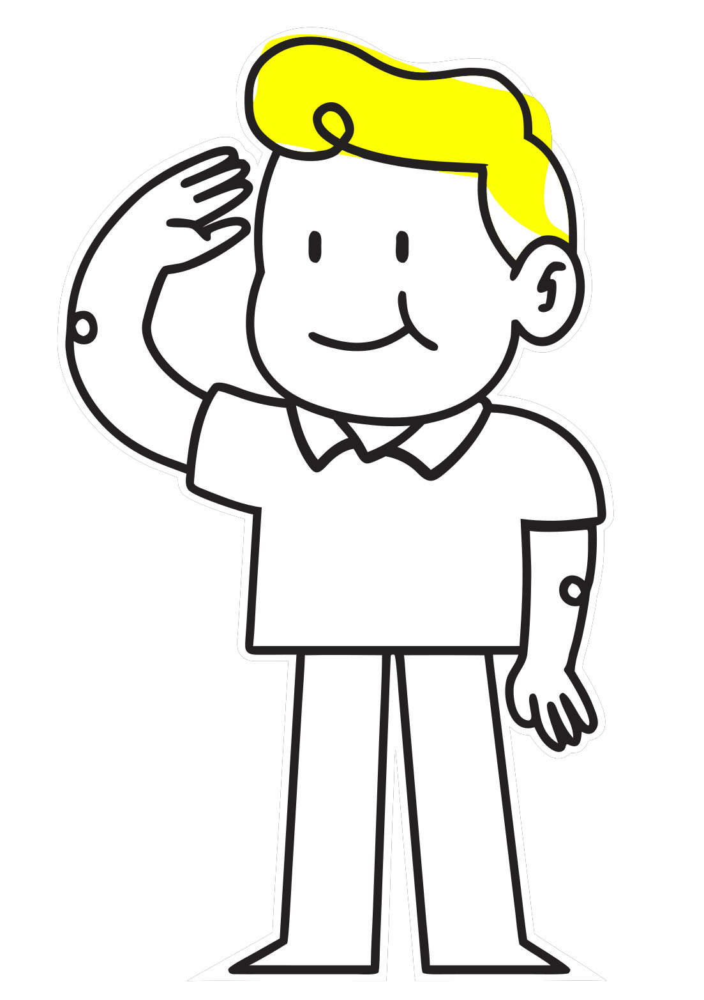

This page covers the brand as the design system uses it in the product: which assets the interface draws, which colours and type carry the brand, and where the yellow is allowed. It isn't a brand book, and the rules for the logo itself aren't written yet.
The mark and the wordmark
Both stand on the same yellow plate, with a notch cut from its bottom right corner. The mark is the plate with a B cut out of it; the wordmark is the plate stretched to hold the name.
| Asset | Where the product uses it | File |
|---|---|---|
| Mark | The app shell's logo while the menu is folded, 28px tall, centred on the rail's icons. The favicon is the same mark in white on a black square | concepts/shared/assets/bolster-mark.svg |
| Wordmark | The logo while the menu is pinned open, at the same height | concepts/shared/assets/bolster-wordmark.svg |
As the menu opens, the mark grows into the wordmark: the plate stretches to the right, the cut-out turns into the B, and the other letters rise into place one after another (D91, trying out). Under reduced motion it switches without moving.
Colour
The brand is two colours: Level yellow and Bolster's black, a warm near-black. Everything else in the palette is there to support them (see Color).
| Token | Preview | Value | Use |
|---|---|---|---|
--color-level-yellow | #fbff00 | ||
--color-black | #1c1a1b |
- The yellow is a highlighter. It's used on black, as the primary button's label in light and the logo's plate on the dark top bar, or as a fill with black on it, as on the brand button.
- Black is the brand's ink. Text, the primary button and the app shell's top bar and rail are Bolster's black, not pure black. The chrome stays dark in both themes.
- Blue isn't the brand. It means a link, focus or selection, never an action or a brand moment.
The brand action
The yellow button is kept for the single step that moves a job forward: sending a proposal, approving, getting paid (D4). It's rare on purpose, so on a page full of buttons it's the one people find.
Code
<button class="button" data-variant="brand">Preview and send</button>
<button class="button">Create job</button>
<button class="button" data-variant="secondary">Customize</button>- It's black on yellow, and goes to the inverse surface when pointed at.
- On the inverse surface, which flips between themes, the yellow has a token of its own,
--color-action-brand-on-inverse: Level yellow on the dark toast, its darkest shade on the light one in dark, so a toast's Undo passes AA in both (D125). - The primary button carries the brand too: black with yellow text in light, yellow with black text in dark. Never put brand beside primary; see Button.
Code
<div class="toast" data-tone="success" role="status" style="animation:none"><span class="toast-message">Proposal sent to Mykola Khvylovy</span><button class="toast-action">Undo</button><button class="toast-close" aria-label="Dismiss" data-tip="Dismiss"><i data-icon="xmark" data-size="16"></i></button></div>| Token | Preview | Value | Use |
|---|---|---|---|
--color-content-on-brand | black | ||
--color-action-brand | level-yellow | Brand is the yellow call to action ("Preview and send"). | |
--color-action-brand-hover | yellow-600 | ||
--color-action-brand-on-inverse | Lightlevel-yellowDarkyellow-950 | the brand action on the inverse surface (a toast's Undo): the yellow on the dark toast, its darkest shade on the light one in dark (D-new) |
The highlighter on search
Where a search matches, the matched letters sit on a softer yellow, like a highlighter pen across the page: in a table's rows and in global search's results.
| Token | Preview | Value | Use |
|---|---|---|---|
--color-highlight-search | Lightyellow-300Darkmix(yellow-700 40%, transparent) | search hits: the matched letters on Bolster's highlighter yellow |
Display type
Space Grotesk is the brand's display face: page titles, section titles and the big figures. Everything else is set in the text face (D6; see Typography).
Code
<span class="text-title-page">Job list</span>
<span class="text-title-section">Roof and kitchen refresh</span>
<span class="text-amount-hero">$12,400.00</span>| Token | Value | Use |
|---|---|---|
--font-display | "Space Grotesk", font-sans |
The loading screen
The first page someone opens plays a loading screen: one of 16 line drawings of the trade, picked at random and never the same twice running (D90, ready). Among them: a tape measure, a wrench bolting the mark, a hammer knocking it together, a taping knife, a spirit level. When the page is ready, the drawing finishes: the tape snaps shut, or the scene settles. Under it, a line in that tool's own trade changes every couple of seconds: “Feathering the edges” under the taping knife, “Chasing the bubble” under the level, now and then one from the site or the office, “Waiting on the lumber yard”. The lines are dry and specific, with no puns and no promise of speed.
- Screen readers hear “Opening Job list” once, not the lines.
- Under reduced motion the drawing stands still and the lines change without moving.
- The drawings and lines are the system's (
system/components/loader.js). See Loader.
Bolton
Bolton is the assistant's character. Bolton's head is the “Ask Bolton” button in the top bar, beside your account, drawn 28px tall in its 36px circle; the full figure is in the assets but no page uses it yet. The assistant itself isn't built.

What's still open
- No rules for the logo: clear space, smallest size, what it may sit on.
- Bolton, the mascot, and the loader's 16 drawings are in the concepts, not in the system.
- The shell draws the logo with hard-coded colours, not the brand tokens, so its letters are pure black rather than Bolster's black.